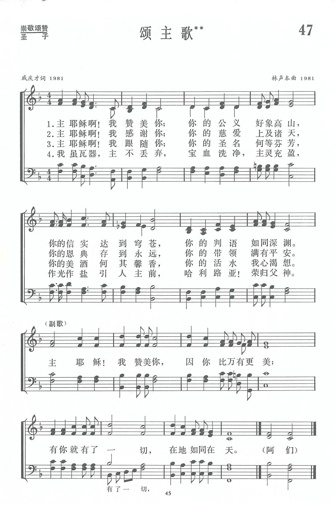

|
|
|
|
|
|
|
https://www.zanmeishige.com/tab/13678.html?songbook=1&index=47
 |
|
|
|
|

第47首 颂主歌** _戚庆才 LORD JESUS, I PRAISE THEE
经文：“耶和华啊，你的慈爱上及诸天，你的信实达到穹苍。你的公义好像高山，你的判断如同深渊”(诗36：5—6)。
这首诗是戚庆才牧师所写。他是山东黄县人，生于1909年，1990年在上海蒙召归天。他少年时信主，先后毕业于上海沪江大学及山东黄县浸信会神学院，1947年在美国获得荣誉神学博士学位。他自1936年起在上海怀恩堂任主任牧师长达54年，除负责本堂工作外，曾在全国性教会机构中担任重要职务，如全国浸联会大会主席，上海沪江大学副董事长，上海灵修神学院副院长，上海基督教青年会董事等。
新中国成立以后，他积极支持基督教三自爱国运动，是《三自宣言》四十位发起人之一。历任中国基督教三自爱国运动委员会副主席，上海基督教教务委员会主席，名誉主席。
戚庆才是一位深受信徒欢迎的牧师，注重以讲道来激励信徒追求灵命的长进。他的讲道深入浅出，生动有力，着重于正面鼓励信徒，在世积极为主作证。著有《主祷文灵训》等书，他离世后，《戚庆才牧师讲道集》、《灵魂的锚》先后被编辑出版。
1981年他应邀担任中国基督教圣诗委员会的委员。虽然他很少写诗，还是答应编辑部同工的要求，写了这首《颂主歌》和第220首《感谢主恩歌》，都是表达他赞美感谢主的深情，抒发他经历“文革”以后的欢乐。
这首诗的特点是经文根据丰富。
一、二两节是根据《诗篇》第36篇第5至6节写成；作者结合自己在“文革”前后的亲身经历，体验出神的公义、信实；从拨乱反正，落实政策，恢复一切待遇等’更体会到神的可信可靠，使人经过试炼，饱尝福份。
第三节的“圣名”出自诗篇第1O3篇第1节；“美酒”引自雅歌第1章12节；“活水”引自雅歌第4章第1 5节；
第四节落实：于“作光作盐，引入主前”，更富有时代气息。
这首诗的曲调是上海林声本牧师的创作。林声本1927年生，1947年为了献身服务教会，进广州浸会神学院学习，毕业后又进上海中华浸会神学院教会音乐系深造，从师马革顺教授，专攻圣乐。1954年从南京金陵协和神学院毕业后，在上海旅沪广东浸信会传道，198O年被按立为牧师，后在上海景灵堂工作。林声本擅长弹钢琴，年青时就担任唱诗班指挥，并为赞美诗谱曲。他是中国基督教圣诗委员会委员，且是《新编》编辑部成员。曾担任《圣歌选集》的责任编辑。
这首诗的曲调富有感恩的情绪，心中的欢乐不彰表于外，而在其中自然流露。
《新编》内选用林声本的创作曲调计有47、84、l03、248、257、309、332等七首，都是配上我国教牧人员创作歌词的作品。他也为唱诗班献唱的圣歌谱曲，在《圣歌选集》内发表的有《耶稣，明亮晨星》等。
戚慶才（1909年－1990年） [編輯]
戚慶才（1909年－1990年），英文名Charles Chi，中國基督教浸信會牧師。
生平[編輯]
1909年，戚慶才出生於中國山東省黃縣（今龍口市）。1931年到1935年就讀於上海滬江大學和黃縣浸信會神學院（SBTC）。此後擔任上海懷恩堂牧師達54年之久（1935－1989）。1937年，淞滬會戰開始，懷恩堂所在的虹口東寶興路271號淪為戰場，於是避入租界，到1942年在西摩路(今陝西北路)375號建成可容千人的新堂。
1947年，戚慶才獲得美國東得大學獲榮譽神學博士學位。戚慶才還擔任過浸信會江蘇省議會執行委員會主席、中華全國浸信會聯會主席、中華浸信會書局董事長、滬江大學副董事長。
1949年以後，戚慶才曾經6次當選為上海市政協委員。他是中國基督教三自愛國運動的40位發起人之一，1954年戚慶才被選為全國基督教三自愛國會常委。1966年文革中遭到批鬥。1980年12月28日，上海懷恩堂重新開放，戚慶才重新擔任該堂牧師。1981年擔任上海市基督教教務委員會主席，還擔任中國基督教三自愛國運動委員會第三、四屆副主席。
https://zh.wikipedia.org/zh-tw/%E6%88%9A%E5%BA%86%E6%89%8D